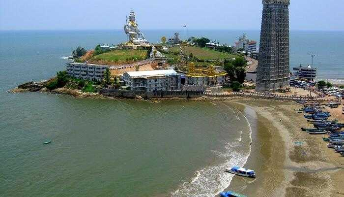
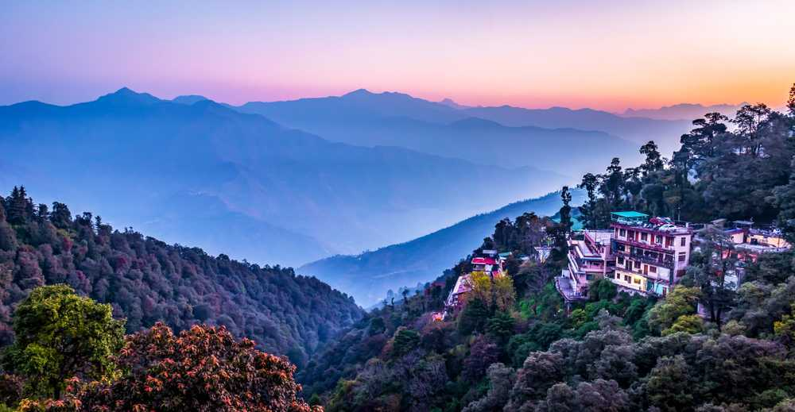
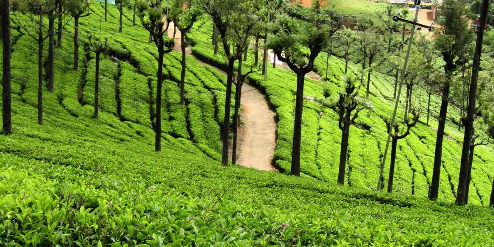
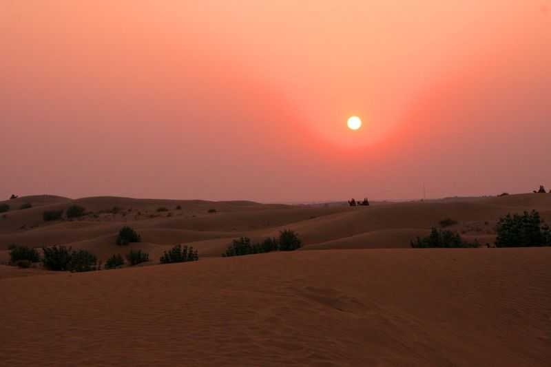
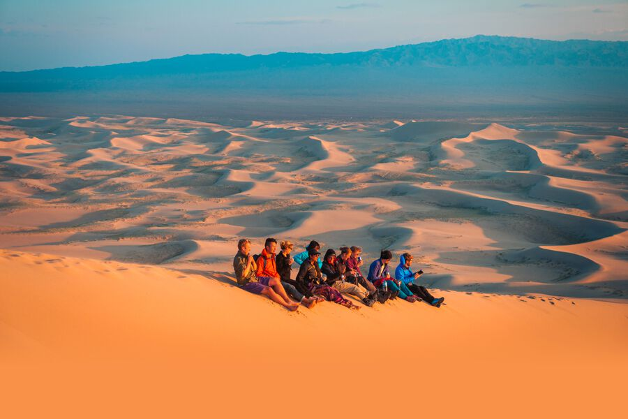
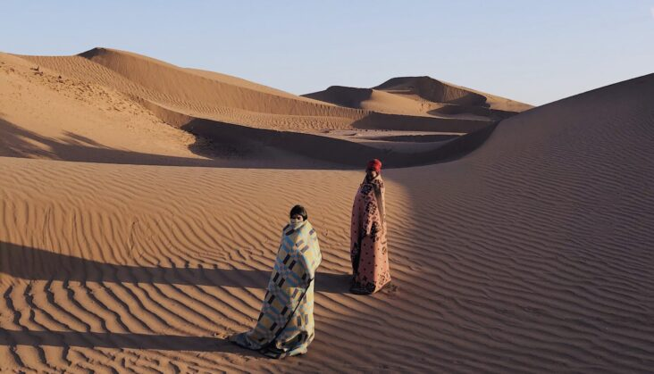
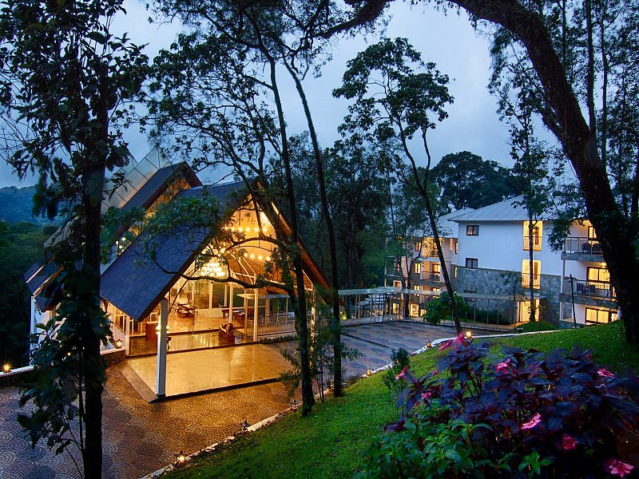
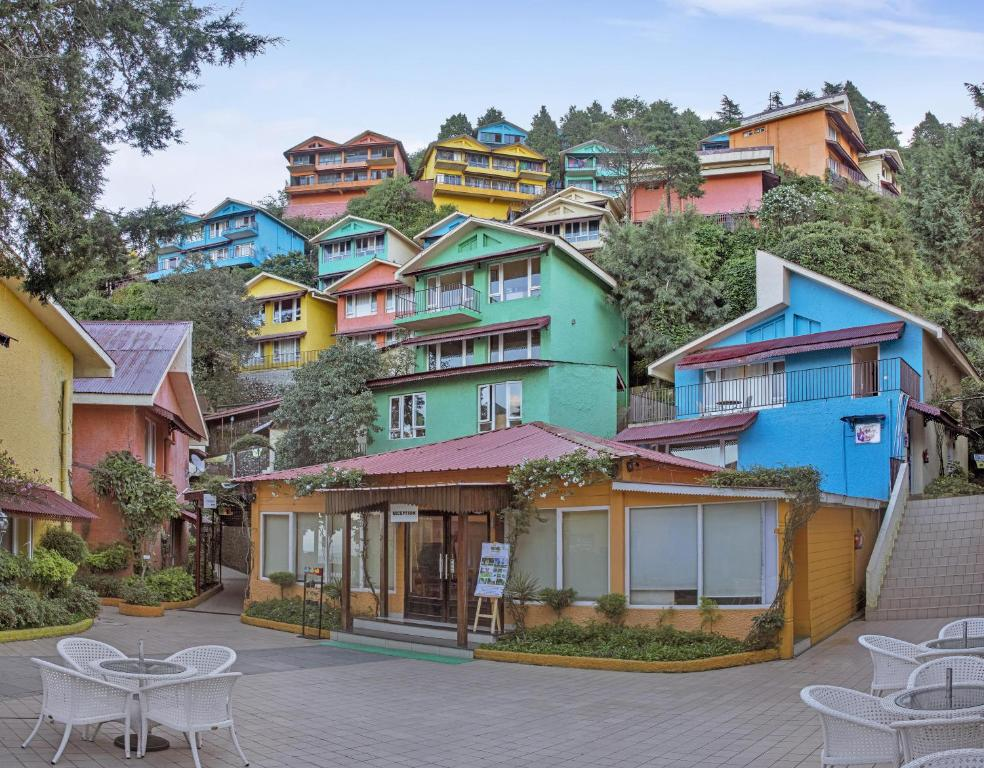
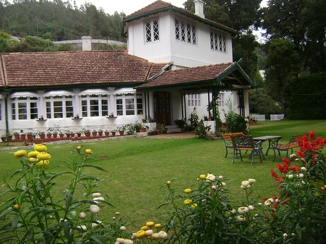

HOLIDAY
Spending quality time with your loved ones and close friends,revive your bonding and improves mutual understanding
GOKARNA
Gokarna is a town on the Arabian Sea, in the southwestern Indian state of Karnataka. A popular pilgrimage destination for Hindus, it’s known for sacred sites like Mahabaleshwar Temple, which has a shrine dedicated to the deity Shiva.Nearby, Koti Teertha is a temple tank where devotees wash in the holy waters. The town is also home to beaches such as palm-lined Gokarna, in the center, plus Kudle and Om farther south.

GOA
Goa is a state in western India with coastlines stretching along the Arabian Sea. Its long history as a Portuguese colony prior to 1961 is evident in its preserved 17th-century churches and the area’s tropical spice plantations. Goa is also known for its beaches, ranging from popular stretches at Baga and Palolem to those in laid-back fishing villages such as Agonda.

MURUDESHWARA
Lying along the periphery of the majestic Murudeshwar Temple is the beautiful beach by the same name. Overlooking the monumental statue of Lord Shiva, this beach is the perfect picnic spot for families and loved ones. The sand of this beach is quite excellent, and its silky texture is not very common. You can also enjoy boat rides around the magnificent Murudeshwar Temple.
MARINA
Situated in the city of Chennai in Tamil Nadu, Marina Beach is a natural urban beach along the Bay of Bengal. The beach is stretched out to a distance of 13 kilometres making it the longest natural urban beach in the country, second largest in the world and also the most crowded beach in India with almost 30,000 visitors a day..

MUSSOORIE
Mussoorie is one of the most popular hill stations located at a distance of 290 km from Delhi in the Dehradun district of Uttarakhand. With a backdrop of the Shivalik range of Himalayas and doon valley, Mussoorie, also known as Queen of The Hills, stands at an altitude of 7000 feet above sea level. With a cool and pleasant climate throughout the year, Mussoorie was once the British summer capital.
MUNNAR
Popular among honeymooners, Munnar is a hill station in the state of Kerala. Located in the Western Ghats at a height of 1600 metres, Munnar is famous for its tea estates, greenery, blankets of mist forming natural-view points. Munnar is divided into Old Munnar, where the tourist information office is, and Munnar, where the bus station and most guest houses are located. The Eravikulam National Park, Salim Ali Bird Sanctuary and tea plantations are its major attractions.

OOTY
Nestled amidst Nilgiri hills, Ooty, also known as Udagamandalam, is a hill station in Tamil Nadu which serves as a top-rated tourist destination. Once regarded as the summer headquarters of the East India Company, the Queen of the hills is a picturesque getaway. Dotted with tea gardens, serene waterfalls, winding country lanes, and charming colonial architecture, Ooty is the perfect respite everyone. Popular among couples and honeymooners, Ooty allures its visitors with the panoramic views of the Nilgiri mountains.
SHILLONG
Shillong Tourism A beautiful city encircled by pine trees, Shillong is the capital of Meghalaya. It derives its name from Lei Shyllong, an idol worshipped at the Shillong Peak. Standing as tall as 1496 meters, this hill station is known for its weather, picturesque locations and traditions. This place is also known as the ‘Scotland of the East. One can find descendants of the Khyrim, Mylliem, Maharam, Mallaisohmat, Bhowal and Langrim tribes. Shillong, the capital of Meghalaya, is home to numerous waterfalls. The key reasons people visit Shillong are the exciting mountain peaks, crystal clear lakes, breathtakingly beautiful golf courses, cafes, and museums. Apart from the natural beauty, Shillong also acts as the gateway to Meghalaya, the state famous for heavy rainfalls, caving, tallest waterfalls, beautiful landscapes and amazing people and culture. Shillong, in particular, has been in the limelight for its jovial people and their culture. Interestingly, Shillong has a very westernised culture, and it has a very young feel to it. Shillong is also famous as the music capital of India, as many prominent musicians have hailed from this place. Many music events keep happening throughout the year, making it a very lively place..

THAR
Located in the northwestern part of the Indian Subcontinent is the 18th largest desert in the world, called the Thar desert. Also named “The Great Indian Desert”, it is a vast expanse of undulating sand dunes spread over an area of 200,000 square km. While a major chunk of the desert is present in Rajasthan, it extends further to the states of Gujarat, Haryana and Punjab in India and to the Pakistani province of Sindh as well. Owing to its diverse ecosystem, the region is teeming with wide varieties of flora and fauna and a rich human culture which attracts tourists from all over the world, making Thar a spectacle to behold.
GOBI DESERT
The Gobi Desert is a vast, arid region in northern China and southern Mongolia. It's known for its dunes, mountains and rare animals such as snow leopards and Bactrian camels. In the Gobi Gurvansaikhan National Park, the Khongoryn Els sand dunes are said to sing when the wind blows. The park also features the deep ice field of Yolyn Am canyon. Dinosaur fossils have been found at the red " Flaming Cliffs" of Bayanzag.
SAHARA DESERT
The Sahara covers large parts of Algeria, Chad, Egypt, Libya, Mali, Mauritania, Morocco, Niger, Western Sahara, Sudan and Tunisia. It covers 9 million square kilometres (3,500,000 sq mi), amounting to 31% of Africa. If all areas with a mean annual precipitation of less than 250 mm were included, the Sahara would be 11 million square kilometres (4,200,000 sq mi). It is one of three distinct physiographic provinces of the African massive physiographic division. The Sahara is mainly rocky hamada (stone plateaus); ergs (sand seas – large areas covered with sand dunes) form only a minor part, but many of the sand dunes are over 180 metres (590 ft) high.[9] Wind or rare rainfall shape the desert features: sand dunes, dune fields, sand seas, stone plateaus, gravel plains (reg), dry valleys (wadi), dry lakes (oued), and salt flats (shatt or chott).[10] Unusual landforms include the Richat Structure in Mauritania
ELIXIR HILL RESORT
We redefine luxury in the jungles of Munnar! Adding a modern spin on timeless indulgence, Elixir Hills offers the largest luxury suites in stunning natural settings. Spacious and tastefully decorated, we offer a perfect blend of nature and luxury in Munnar. At Elixir Hills, there is Love in the Air!
MAHINDRA CLUB RESORT
Old-world cafes, charming streams and hidden pathways make Mussoorie one of the most loved holiday destinations in India. Travel to the 'Queen of Hills' and make your way to one of our most popular Uttarakhand resorts – Club Mahindra Mussoorie Bond with your family over enriching experiences at Club Mahindra Mussoorie..
ORION RESORT
A brief history of the Bungalow -Rock fort: The Bungalow was originally constructed in the year 1866, it was built by Madam Lucy Caroline Watson, then the property changed hands and came in the ownership of The Ootacamund Club, then it fell in the hands of A.R.A.H. Duke( Esq. MA,A.M.T.C.E ) in the year 1921 for a princely sum of Rs.7,500, thenceforth the bungalow was famed as Dukes Bungalow. A man of benevolent esthetical senses, Mr. Duke paved the living room with magnificent green tiles, which retain its color and glamour even today. Somewhere in 1925, somehow the name changed to Rock Fort and once again it changed hands to Madam Ida Louisa Chambers in the year 1940,and Madam Ida an ardent gardener and horticulturist, created the garden and the woods around. In the year 1957, it fell in the hands of Mrs. Bala Krishna Ammal, since then Smt. Ammal and her family are nursing the property in grandeur way. And in the year 2012 we Orion Holiday Resorts Ltd., stepped in The Orion Resort, Ooty welcomes you to Ooty - the Queen of hill stations! With its cool and soothing climate Ooty is always considered the paradise of Holiday makers. The Orion Resort, Ooty is one of the oldest bungalows in the region! Hidden in the woods, with its discreet entrance, the bunglow has a tranquil and relaxing atmosphere ideal for holidays. A deeply fragrant mesmerizing and enchanting garden around it makes all the more attractive. The tranquil hillside and the garden greenery make it the perfect place to sit with a book, or simply breathe in fresh air. Verandah Just outside are long porches or verandahs, typical of estate bungalows from where one can enjoy the nature. Living Room The stylish living room, and many little nooks have a lovelyooty5.jpg view of the garden and the hills. In winters a fire place infuses the cottage with warmth, making it snug and cozy. Bedroom The cozy and elegant bedrooms are quintessentially British in decor. Dining At the dining room with our friendly and efficient service, all you need to do is sit back and relax with a cup of tea beside the woods. Indian and Continental cuisine will be served at your choice. All these features make the British Bungalow, Orion Resort Ooty ideal for people from all walks of life.
